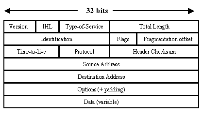
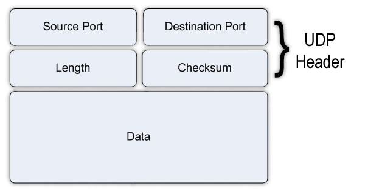

Protokoly Internety
Protokol je v informatice konvence nebo standard, podle kterého probíhá elektronická komunikace a přenos dat mezi dvěma koncovými body (realizované nejčastěji počítači). V nejjednodušší podobě protokol definuje pravidla řídící syntaxi, sémantiku a synchronizaci vzájemné komunikace. Protokoly mohou být realizovány hardwarově, softwarově a nebo kombinací obou.
TCP
Transmission Control Protocol (TCP) je nejpoužívanějším protokolem transportní vrstvy v sadě protokolů TCP/IP používaných v síti Internet. Použitím TCP mohou aplikace na počítačích propojených do sítě vytvořit mezi sebou spojení, přes které mohou obousměrně přenášet data. Protokol garantuje spolehlivé doručování a doručování ve správném pořadí. TCP také umožňuje rozlišovat a rozdělovat data pro více aplikací (například webový server a emailový server) běžících na stejném počítači. TCP využívá mnoho populárních aplikačních protokolů a aplikací na internetu, včetně WWW, e-mailu a SSH.
UDP
UDP (User Datagram Protocol) je jeden ze sady protokolů internetu. O protokolu UDP říkáme, že nedává záruky na datagramy, které přenáší mezi počítači v síti. Někdy je označován jako nespolehlivý, ale správněji by mělo být bez záruky doručení, což je hlavní rozdíl proti protokolu TCP. Protokol UDP je vhodný pro nasazení, které vyžaduje jednoduchost, malá režie nebo pro aplikace pracující systémem otázka-odpověď (např. DNS, sdílení souborů v LAN). Jeho bezstavovost je užitečná pro servery, které obsluhují mnoho klientů nebo pro nasazení, kde se počítá se ztrátami datagramů a není vhodné, aby se ztrácel čas novým odesíláním (starých) nedoručených zpráv (např. VoIP, online hry).
DHCP

DHCP je název protokolu z rodiny TCP/IP nebo označení odpovídajícího DHCP serveru či klienta. Používá se pro automatickou konfiguraci počítačů připojených do počítačové sítě. DHCP server přiděluje počítačům pomocí DHCP protokolu zejména IP adresu, masku sítě, implicitní bránu (default gateway) a adresu DNS serveru. Platnost přidělených údajů je omezená, proto je na počítači spuštěn DHCP klient, který jejich platnost prodlužuje.